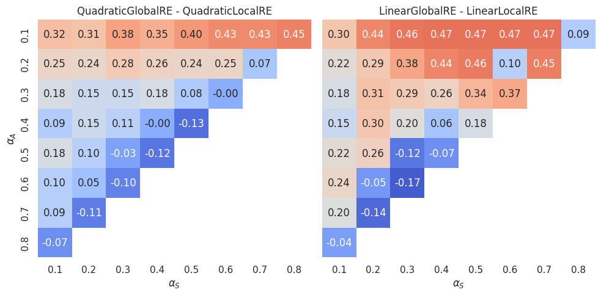
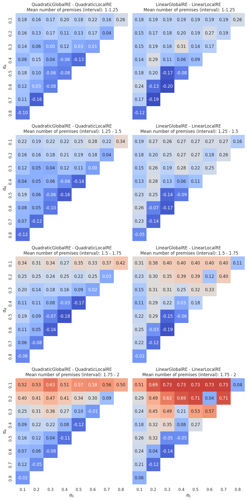

| Model | GO efficiency (result perspective) | GO efficiency (process perspective) | GO reachability |
|---|---|---|---|
| LinearGlobalRE | 0.73 | 0.73 | 0.33 |
| LinearLocalRE | 0.45 | 0.54 | 0.14 |
| QuadraticGlobalRE | 0.76 | 0.75 | 0.49 |
| QuadraticLocalRE | 0.33 | 0.35 | 0.27 |
3 Global optima and fixed points
3.1 Background
Global optima are epistemic states (i.e., commitments-theory pairs) that maximize epistemic desiderata as the achievement function defines it. The models we assess simulate RE processes by mutually adjusting commitments and theories. Since these models proceed in a semi-globally or locally optimizing fashion, fixed points of RE processes are not necessarily global optima (see Section 1.3 for details). It is, therefore, important to assess the performance of the different models with respect to their ability to reach global optima. Two main questions guide the following evaluation:
- GO efficiency: Are fixed points global optima? More specifically, what is the share of global optima among fixed points?
- GO reachability: Are global optima reachable by RE processes? More specifically, what is the share of fixed points that are global optima among global optima?
GO efficiency and reachability might not only differ between model variants but might, additionally, depend on the specifics of the simulation setups. In the following, we will confine the consideration to the following dimensions:
- How do GO efficiency and reachability depend on the size of the sentence pool?
- How do GO efficiency and reachability depend on the arguments’ mean number of premises?
- How do GO efficiency and reachability depend on \(\alpha\) weights?
We will answer these questions by calculating different relative shares in the following way.
Let the ensemble \(E\) be the entirety of simulation setups we used to simulate RE processes. Each simulation setup \(e\in E\) corresponds to a set of RE processes that can evolve with this specific setup. Remember that the different steps in the evolution can be underdetermined. In other words, a RE process might branch. We will denote the set of all branches of a specific simulation setup \(e\) with \(B_e\). Consequently, a specific setup can have more than one fixed point. Similarly, there is not necessarily one global optimum for each simulation setup but possibly many (denoted by \(GO_e\)).
GO efficiency can be calculated in two different ways. First, we can assess the share of global optima among all branches. In other words, we count those branches in \(B_e\) that end up in global optima and divide by \(|B_e|\). We will refer to this type of GO efficiency as GO efficiency from the process perspective. However, different branches might end up in the same fixed points. Another way of calculating GO efficiency—GO efficiency from the result perspective—avoids a possible “multiple” counting of fixed points by considering the (mathematical) set of fixed points.
More formally, let \(\{FPGO\}_e\) the set of all fixed points of \(e\) that are global optima, and let \([FPGO]_e\) the fixed points of all branches in \(e\) that are global optima. The latter is formally a multiset, which can contain one fixed point multiple times. We can now define different types of GO efficiency—one based on \(\{FPGO\}_e\) and one on \([FPGO]_e\). The corresponding share will be calculated by formulas of the form
\[ GOE^{proc}(E^*):=\frac{\sum_{e\in E^*}\vert [FPGO]_e\vert}{\sum_{e\in E^*}\vert B_e\vert} \]
and of the form
\[ GOE^{res}(E^*):=\frac{\sum_{e\in E^*}\vert \{FPGO\}_e\vert}{\sum_{e\in E^*}\vert \{FP\}_e\vert} \]
with respect to different subsets \(E^* \subset E\).
For instance, let \(E_{M_1}\) be the set of all simulation setups belonging to the model \(M_1\). We can calculate the overall GO efficiency of \(M_1\) from the process perspective by \(GOE^{proc}(E_{M_1})\) and from the result perspective by \(GOE^{res}(E_{M_1})\).
How can we interpret these different types of GO efficiency? One idea is to interpret them probabilistically. According to this suggestion, the ensemble-based model assessment informs us about the probabilities of catching global optima by means of RE processes. On this view, GO efficiency from the process perspective is the probability of a process ending up in a global optimum. On the other hand, GO efficiency, from the result perspective, is the probability of a fixed point being a global optimum. You can think of the difference in terms of when or under which conditions to ask about the probability. In contrast to the latter case, you do not know the fixed point of the process (perhaps the process has not ended yet) in the former case.
It does not make much sense to distinguish GO reachability between the process and result perspective. GO reachability asks about the share of global optima that are reachable by RE processes among all global optima. Naturally, the denominator is the (mathematical) set of all global optima in a simulation setup (\(GO_e\)), which is a process-independent property of the simulation setup. Since it might happen that \(\vert [FPGO]_e \vert>\vert GO_e \vert\) we should define GO reachability based on \(\{FPGO\}_e\):
\[ GOR_{E^*}:=\frac{\sum_{e\in E^*}\vert \{FPGO\}_e\vert}{\sum_{e\in E^*}\vert GO_e\vert} \]
3.2 Results
3.2.1 Model Overview
Table 3.1 and Figure 3.1 provide an overview of the different models’ overall GO efficiency and reachability.
The semi-globally optimizing models perform on all measures better than the locally optimizing models.
GO efficiency is high for the former (\(0.73-0.76\)) and does not (much) differ between the process and result perspectives. GO efficiency varies for locally optimizing models between \(0.33\) and \(0.54\). We only observe a difference between the process and result perspective for the LinearLocalRE model (\(0.45\) vs. \(0.54\)). In other words, the extent of branching for the LinearLocalRE model differs between those processes that end up in global optima and those which do not.
GO reachability is for all models below GO efficiency and varies between low (\(0.14\) for LinearLocalRE) and medium (\(0.49\) for QuadraticGlobalRE).
With respect to the overall GO efficiency and reachability, the QuadraticGlobalRE model performs best since it reaches the highest value in GO reachability and is slightly better than LinearGlobalRE concerning GO efficiency.
For the locally optimizing models, the comparison between quadratic and linear shaped \(G\) functions is less clear-cut: While LinearLocalRE performs better in GO efficiency than QuadraticLocalRE (\(0.45/0.54\) vs. \(0.33/0.35\)), it is the other way around concerning GO reachability (\(0.14\) vs. \(0.27\)).

3.2.2 GO efficiency
3.2.2.1 Dependence on sentence pool
Figure 3.2 shows that GO efficiency is more or less stable along different sizes of the sentence pool for semi-globally optimizing models. The locally optimizing models not only perform worse than the semi-globally optimizing, but GO efficiency decreases for them with an increase in the size of the sentence pool.

As we already saw in the model overview, there is no big difference between the result and process perspective except for the LinearLocalRE model, which performs better from the process than from the result perspective (see Figure 3.3).

3.2.2.2 Dependence on mean number of premises
Figure 3.4 and Figure 3.5 show the dependence of GO efficiency on the mean number of argument’s premises. They might be interpreted as suggesting that the locally optimizing models tend to perform worse with an increasing amount of premises in arguments. At least the difference between semi-globally and locally optimizing models is smaller for lower mean numbers of premises.
The zigzag shape of the lines suggests that the actual underlying variance is bigger than the pictured error bars.1 One explanation might be that GO efficiency depends crucially on properties of the dialectical structures other than the mean number of premises. Since there are few dialectical structures for individual data points, their calculation is hardly based on a representative sample. Accordingly, the zigzag might indicate the variation in GO efficiency more accurately. Consequently, the plots must be interpreted with caution.


3.2.2.3 Dependence on \(\alpha\)-weights
In the preceding sections, we aggregated over the spectrum of different \(\alpha\)-weight configurations. The question is to what extent GO efficiency depends on the chosen \(\alpha\) weights.
The heatmaps in Figure 3.6 and Figure 3.7 provide an overview of the \(\alpha\)-weight dependence. In the following, we will refer to specific cells in the typical \((x,y)\) fashion. For instance, we will call the cell with \(\alpha_S=0.5\) and \(\alpha_A=0.2\) the \((0.5,0.2)\) cell.
GO efficiency tends to increase with a decrease in \(\alpha_A\) and with an increase in \(\alpha_S\). There are some exceptions to this pattern, especially in linear models. Most notably, there are four “cold” islands in the linear models from both perspectives (compare the \((0.2,0.4)\), \((0.4,0.3)\), \((0.6,0.2)\) and \((0.8,0.1)\) cells in Figure 3.6 and Figure 3.7). The comparably dinimished magnitude of GO efficiency can be explained by the comparably high number of global optima in three of theses cells (compare the \((0.4,0.3)\), \((0.6,0.2)\) and \((0.8,0.1)\) cells in Figure 2.6). Surprisingly, the locally and semi-globally optimizing model perform similarly bad, although the semi-globally optimizing model produces much more branches and fixed points in these cells (compare Figure 2.12 and Figure 2.13). [XXX: Re-check with full data set!]
Additionally, linear models tend to exhibit more extreme values than quadratic models. In other words, the difference between “hot” and “cold” regions is higher for linear models than for the quadratic counterparts.


Figure 3.8 and Figure 3.9 can be used to compare semi-globally with locally optimizing models. It shows for each \(\alpha\) cell the difference in GO efficiency between the semi-globally optimizing model and its locally optimizing variant. As already observed above, the locally optimizing models perform on average worse than the semi-globally optimizing models. The difference in performance is smaller between the linear variants than the quadratic variants. The LinearLocalRE model is for some \(\alpha\)-weight combinations even better than the LinearGlobalRE and for many configurations as good as the latter.


Figure 3.10 and Figure 3.11 show, additionally, the dependence on the mean number of arguments. The mean number of premises varies between \(1\) and \(2\). We divided this interval into four bins (\(1-1.25\), \(1.25-1.5\), \(1.5-1.75\) and \(1.75-2\)) and every heatmap row aggregates over those dialectical structures that have a mean number of premises in the corresponding bin.
Interestingly, there is a difference between quadratic and linear models. For the linear models, the heatmaps do not change much with an increase in the mean number of premises. However, heatmaps suggest such a dependence for the quadratic models: The higher the mean number of premises, the higher the difference between semi-globally and locally optimizing models.


3.2.3 GO reachability
3.2.3.1 Dependence on sentence pool
Figure 3.12 shows that GO reachability drops quickly for the linear models and slightly for the quadratic ones with increasing size of the sentence pool. For \(n=9\), a locally optimizing model (QuadraticLocalRE) even outperforms a semi-globally optimizing model (LinearGlobalRE).

3.2.3.2 Dependence on mean number of premises
As before, the overall performance in dependence on the mean number of premises is hard to interpret. Figure 3.13 might suggest that the three models LinearGlobalRE, QuadraticLocalRE and LinearLocalRE perform worse with an increase in the mean number of premises. Only QuadraticGlobalRE is able to keep its level of performance.

3.2.3.3 Dependence on \(\alpha\)-weights
The dependence of GO reachability on \(\alpha\) weights is somewhat similar to that of GO efficiency. For the semi-globally optimizing models, GO reachability tends to increase with a decrease in \(\alpha_A\) and an increase in \(\alpha_S\). Again, there are exceptions to this behaviour. Besides the islands of the LinearGlobalRE model, the \(0.1\) \(\alpha_F\) isoline has particularly low GO reachability values for the QuadraticGlobalRE model.
The linear model variants’ cold islands can, again, be explained by the comparably high number of global optima in three of theses cells (compare the \((0.4,0.3)\), \((0.6,0.2)\) and \((0.8,0.1)\) cells in Figure 2.6).
The locally optimizing model variants have a comparably non-regular dependence on \(\alpha\) weights. Additionally, the values do not vary that much between different cells as compared to the globally optimizing models.

The direct comparison between semi-globally and locally optimizing models (Figure 3.15) shows that locally optimizing models are, for some \(\alpha\)-weight combinations, able to outperform the semi-globally optimizing models (cells with negative values).

By separating dialectical structures according to their mean number of premises (Figure 3.16) we can see that the advantage of \(\alpha\)-weight combinations for which the semi-globally optimizing models are on average particularly better w.r.t. GO reachability (roughly, the “hot” cells in the \((0.2-0.7, 0.1-0.2)\) area in Figure 3.15) is mainly generated by dialectical structures with a higher mean number of premises. In contrast, cells in which locally optimizing models outperform semi-globally optimizing models (roughly, the “cold” cells of the \(0.1/0.2\) \(\alpha_F\) isolines in Figure 3.15) are more or less stable for the different bins for the mean number of premises.

3.3 Conclusion
On average, GO efficiency is high for semi-globally optimizing models and medium-high for locally optimizing models. The fact that GO efficiency drops for semi-globally optimizing models with the size of the sentence pool is, to some extent, worrisome since they are intended to be used in scenarios with larger sentence pools, which are computationally too demanding for semi-globally optimizing models. The question is whether their performance can be improved by increasing their search depth \(d\).
However, in specific contexts the modeller will choose a specific set of \(\alpha\) weights. We already saw that the performance of the different model varies significantly between different \(\alpha\)-weight configurations. Consequently, the dependence on the sentence pool should be repeated for those regions of \(\alpha\)-weight configurations that are of interest for the modeller. For instance, if we choose to confine the analysis to \(\alpha\)-weight configurations with \(\alpha_a < \alpha_s\), GO efficiency of the LinearLocalRE is as high as of the models QuadraticGlobalRE and LinearGlobalRE (see XXX).
Surprisingly, GO reachability is low to medium for all models. Additionally, all but the QuadraticGlobalRE model perform worse with an increase in the size of the sentence pool. A better understanding of this behaviour requires a more detailed analysis, which should be based on a more extensive set of dialectical structures.
The QuadraticGlobalRE model outperforms all other models on average. A direct comparison of the locally optimizing models is complicated since it involves a trade-off: While the LinearLocalRE model reaches a higher GO efficiency than the QuadraticLocalRE model, it is the other way around with respect to GO reachability.
The error bars are standard deviations, which are calculated by bootstrapping on the used subset \(E^*\) in the calculation of \(GOE(E^*)\).↩︎